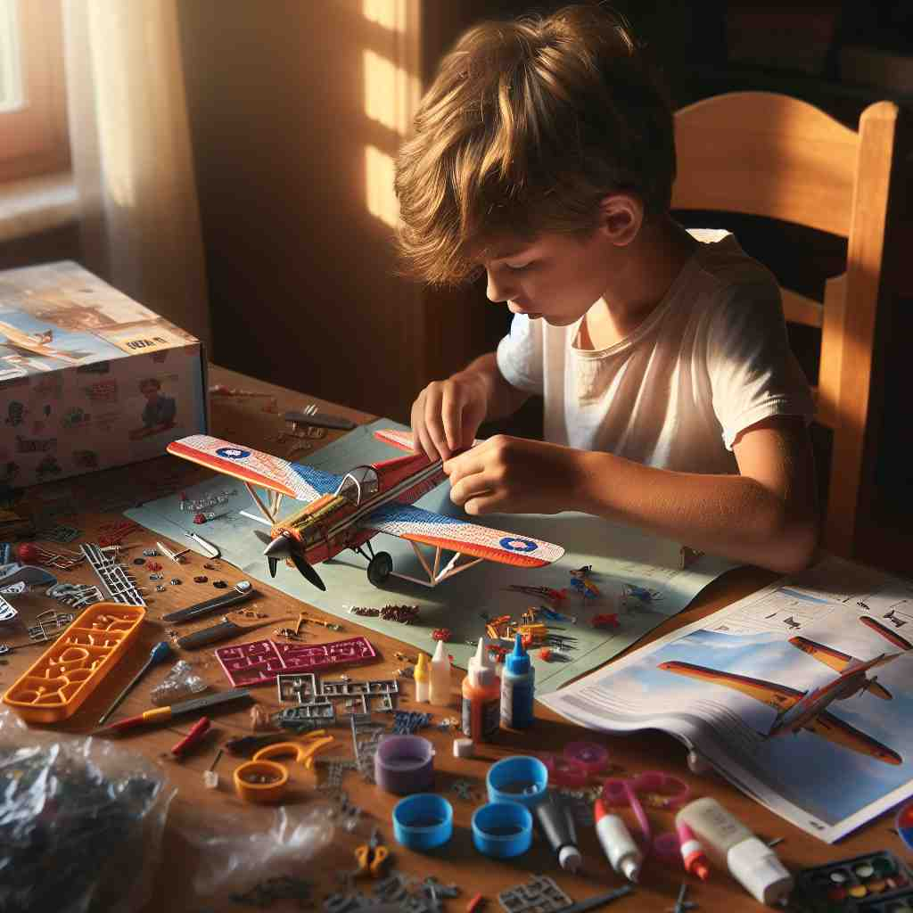
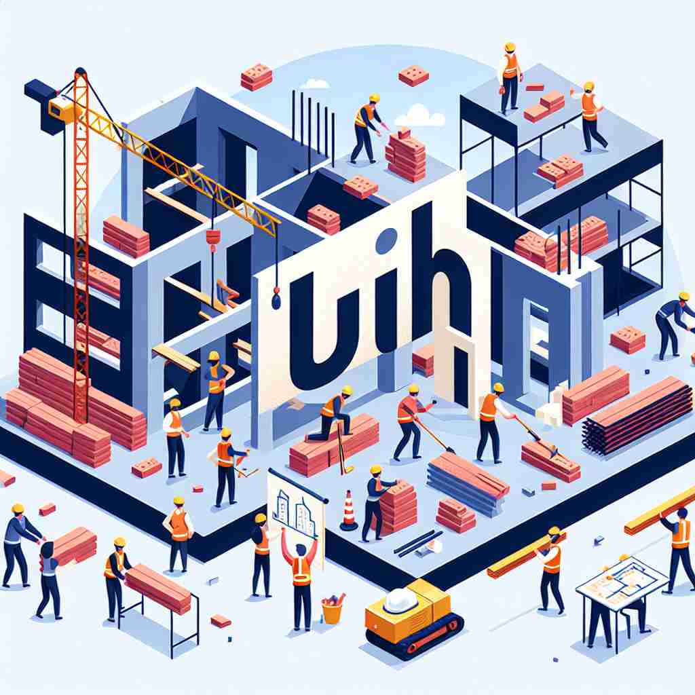

💬 The children like to build a sandcastle on the beach.

💬 The workers are here to build a building.

💬 The child loves to build a model of an airplane.

💬 The workers are going to build a house at the construction site.
🔈 [bɪld]
🗝️ v. to make something by putting parts together
🖼️ 在一个繁忙的建筑工地，工人们正齐心协力地搭建一座高楼。他们把钢梁一一吊起，稳稳地放置在正确的位置上，不断地组合与组装，体现了'build'通过拼装部分来创造整体的过程。
🔍 想象你正在搭建一座房子，这就是'build'的核心含义。无论是实际的建造，还是抽象概念的构建，都可以联想到这个过程。这个核心动作贯穿了'build'的各种用法，从字面的建筑物到比喻的事业、论点甚至身材，都可以用'搭建'的概念来理解和记忆。
💬 The children like to build a sandcastle on the beach.
💬 The workers are here to build a building.
💬 The child loves to build a model of an airplane.
💬 The workers are going to build a house at the construction site.
🌳 词根 'build' 源自古英语词 'byldan'，意为建设或制造。它本身是一个基础动词，表示建造或构筑。
💡 可以将 'build' 联想为构造房屋或任何结构的过程，帮助记住它的核心含义是建设。想象施工现场，一个个砖瓦被放置，一个结构逐渐成型，这样可以加深对 'build' 相关词汇的记忆。
🗝️ v. to develop or create over time
🖼️ 在一个安静的社区，邻居们通过定期的活动与聚会，逐渐建立起紧密的友谊与信任。这种随着岁月积累的情感关系，形象地展示了'build'随着时间的推移发展或创造的含义。
💬 It takes years to build a successful career.
❓ 像搭建实物一样逐步构建抽象概念
🗝️ v. to increase in amount or intensity
🖼️ 在一场激烈的足球比赛中，球迷们的欢呼声越来越响亮，士气不断高涨。这种由小到大的增加，正是'build'在数量上或强度上逐渐增强的体现。
💬 The tension in the room was building as we waited for the results.
❓ 如同堆砌物品一样累积或增强
🗝️ v. to base on or found
🖼️ 在一个创新科技会议上，演讲者谈论了他们的新产品如何'build' on现有技术，利用已有的知识作为基础，推动新产品的诞生，这正是'build'作为基础或根据的意义所在。
💬 He built his argument on solid evidence.
❓ 将某事物作为基础来构建
🗝️ v. to develop physically
🖼️ 在健身房里，一位男性健身爱好者通过每天的力量训练和饮食调节，逐渐'build'起强健的体格，这里展示了'build'在身体发育与成长方面的意义。
💬 Regular exercise helps to build muscle.
❓ 像建造建筑一样塑造身体
🗝️ n. the physical form or shape of a person or animal
🖼️ 在一个宠物比赛中，裁判详细观察每只狗的'build'，评估其体型与结构，以决定哪一只拥有最佳的外貌与姿态。这种对体形的关注正是'build'作为名词的含义。
💬 He has a muscular build.
❓ 身体结构像是建筑的构造